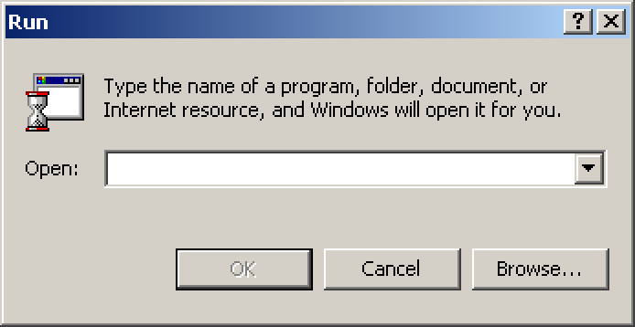
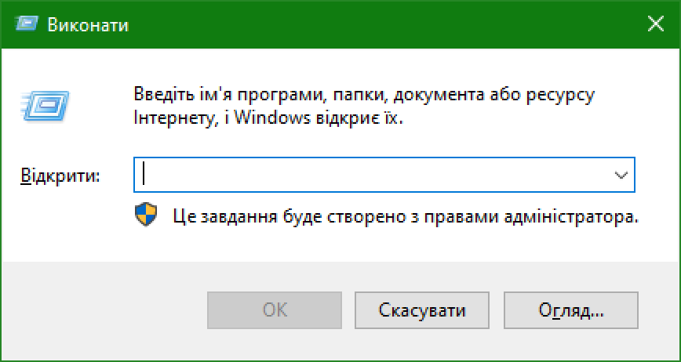

Мій коментар під відео Одинадцятого "Чудова альтернатива інтерфейсу Windows"
Ну тут треба знімати 1+ год розбір на відео.
1 з самих убогих і незручних для перегляду відеорядів, які Я бачив на ютубі
Футажі до цього відео записані в 1440p (при тому що відео у 1080p) – що призводить до поганої читабельності інтерфейсу при 1080p плеєрі (бо фізичний розмір і роздільна здатність шрифтів – занадто мала).
Якість зображення у відео – погана (при 1080p плеєрі – відео занадто розмите), а в приближенні – все зовсім погано (0:14 інтерфейс Windows XP приближений – тут видно що футажі були записані в погані якості – внаслідок цього текст дуже розмитий коли приближено).
Якщо відео треба приближати – значить розмір інтерфейсу занадто маленький (щоб розгледіти інтерфейс на пристрої – з якого дивиться калічна більшіть (смартфон)). Щоб інтерфейс можна було розгледіти (навіть на смартфоні) – треба використовувати роздільну здатність – 1280x720 для футажів Windows!

Початок відео
Вітаю, Одинадцятий в ефірі! А ти помічав – що інтерфейси деяких версій Windows – виглядають незручними та дивними, а деякі викликають тільки приємні згадки.
Початок відео – і вже потік тупізни (ну вони ж виглядають не зручними – значить 100% незручні, і до чого тут взагалі те – що вони виглядають дивно? Ні до чого!)
виглядають не зручними ≠ незручні
виглядають дивно ≠ погані чи не гарні
"а деякі викликають тільки приємні згадки" – відповідно ці інтерфейси хороші, а ті що просто ВИГЛЯДАЮТЬ – незручними та дивними погані, якщо якийсь інтерфейс – викликає тільки приємні згадки – це не означає що він хороший (тут може бути упередження через те – що старий інтерфейс асоціюється з певним періодом – в який користувач цей інтерфейс використовував (який звісно що минуле – де все було "краще") – через це виникають приємні згадки).
Виникають приємні згадки ≠ хороший інтерфейс
Одинадцятий – Хочу разом з тобою розібратись – чому так і що з цим робити."
Виглядає дивно – бо виглядає дивно, і не як всі інші інтерфейси – тут конкретно треба в чомусь розбиратися? І як ти можеш з глядачем розібратись? Ти вже розібрався – до того як опублікував відео. Буває таке що хтось грає в гру і говорить – "сьогодні я з вами буду 'не придумав приклад'" – тут є логіка (бо летсплеєр щось робить при глядачах).
Вже в початку відео – немає логіки і здорового глузду!
Можна було просто почати відео з – "Вітаю, 11-й в ефірі! А ти помічав – що деякі інтерфейси Windows зручні а деякі не незручні"
Готуйтеся до потоку шизофазії від Одинадцятого! (1:53)
Одинадцятий – Розкладка на екрані звична для кожного з нас – існує вже майже 30 років (з часів Windows 95), тут – меню пуск, ось панель завдань, там всі наші відкриті вікна, тут годинник, тут мова, і так далі. Кожна Windows – відрізняється від попередньої візуально, але взаємодія не еволюціонує.
В кінці 90-х до середини 2000-х – дизайнери такої розкладки використовували її за призначенням (ось дивіться – у вас тоді був 15" або може 17" квадратний монітор, ваш курсор знаходиться – рівновіддалено до кожного кутка і не потребує великих зусиль – щоб перевести погляд туди – де нам потрібно натиснути мишею, та й вести мишу доводиться недалеко – бо розПОдільна здатність монітора також маленька.
Може роздільна здатність, а не розПОдільна здатність?
Одинадцятий – Через цю причину і піктограми керування тоді – робили більшими та контрастними – щоб просто мишею можна було – швидко та зручно невести."
Ну і ДЕ тут зв'язок? На великі піктограми – буде легше навестися що на 15", що на 24" моніторі, хіба що – на старих ЕПТ-моніторах з якогось фіга вище PPI – тому треба більші піктограми. Контрастними піктограми роблять – щоб їх можна було легко помітити (тут також немає зв'язку з "курсор знаходиться – рівновіддалено до кожного кутка і не потребує великих зусиль – щоб перевести погляд туди – де нам потрібно натиснути мишею, та й вести мишу доводиться недалеко – бо розПОдільна здатність монітора також маленька").
Продовження потоку шизофазії Одинадцятого
Одинадцятий – Вихід Windows Vista із кардинально оновленим дизайном – був відповіддю на популярність рідкокристалічних моніторів – які швидко починають змінювати ЕПТ-монітори, рідкокристалічні монітори – стають більшими за розміром, їх розПОдільна здатність росте – це натякає розробникам – що вже не потрібно робити кнопки – такими великими, достатньо зробити контрастними. В 2006 році все на тих самих місцях – але компактніше та зручніше (більше простору представлено саме – взаємодії користувача зі своїми файлами та документами).
Ну і ДЕ тут зв'язок? Що в дизайні Windows Vista змінено саме так – щоб це було зручніше використовувати на рідкокристалічних моніторах?
Всі зміни в Windows Vista (які Я знаю) – які можна зв'язати з рідкокристалічними моніторами
• Шрифт Segou UI 9 замість Tahoma 8 (це покращує читабельність на моніторах з більшим PPI (бо на них старий шрифт – фізично менший, і можливо комусь занадто маленький).
• По стандарту використовується – згладжування шрифтів по технології ClearType (вона з'явилася у Windows XP (була вимкнута по-стандарту), на моніторах з маленьким PPI – шрифт виглядав би піксельно, а ось Tahoma 8 – якраз добре виглядає на екранах з маленьким PPI (нижче візуальне доведення (якщо це стаття)) – тому цю зміну можна зв'язати зі збільшенням PPI в рідкокристалічних моніторах).



А ти (на відміну від Мене) просто маячну несеш! Просто ЯК можна зв'язати – компактніший інтерфейс і менші кнопки – зі збільшенням розмірів моніторів?
І це ще тільки – верхівка айсбергу проблем з цим відео!
Дата публікації коментарю: 09.09.2026